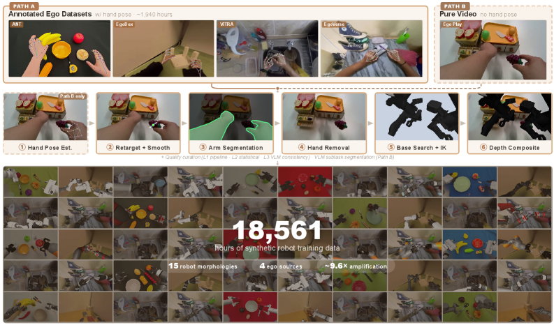
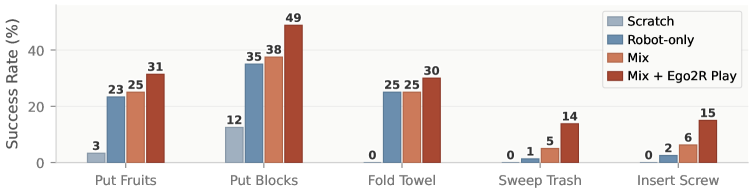

Data SynthesisEgocentric VideoRetargetingVideo InpaintingCross-Embodiment
제출: 2026년 8월 3일 · 원본 사람 영상 약 1,940시간 → 로봇 데이터 18,561시간(약 9.6배) · 로봇 15종
한 줄 요약 (TL;DR)
로봇 학습의 발목을 잡는 것은 데이터 부족이다. 로봇을 사람이 직접 조종해 모으는 데이터는 비싸고 느리다. 반면 사람이 1인칭 시점 카메라로 찍은 일상 조작 영상은 이미 넘쳐난다. 이 논문은 그런 영상을 로봇 학습 데이터로 자동 변환하는 파이프라인이다. 사람 손동작을 로봇 그리퍼 동작으로 옮기고(동작 정렬), 영상에서 사람 팔을 지우고 그 자리에 로봇 팔을 렌더링해 합성하며(시각 정렬), 망가진 결과를 3단계로 걸러낸다. 사람 영상 약 1,940시간을 로봇 15종에 각각 렌더링해 18,561시간(약 9.6배)의 합성 데이터를 만들었다 — 현재까지 가장 큰 "사람→로봇" 변환 데이터셋. 이 합성 데이터를 진짜 로봇 데이터와 1:1로 섞어 사전학습하면, 학습 때 못 본 상황에서의 성능이 전 항목에서 오른다(예: 새로운 과제 46.2%→54.1%).
1배경 · 문제의식
VLA(Vision-Language-Action, 카메라 영상과 말로 된 지시를 받아 로봇 움직임을 직접 출력하는 모델)는 데이터를 많이 먹을수록 잘한다. 그런데 로봇 데이터는 사람이 로봇을 하나하나 조종해 모아야 해서 양과 다양성이 근본적으로 제한된다.
대안으로 주목받는 것이 1인칭 시점(egocentric) 사람 영상 — 머리에 카메라를 달고 요리·정리·조립을 하는 영상은 이미 수천 시간 공개돼 있다. 문제는 몸이 다르다는 것(embodiment gap)이다. 영상 속엔 다섯 손가락 사람 손이 나오지만 로봇은 두 갈래 집게다. 화면에 로봇은 아예 보이지도 않는다. 그대로 학습시키면 로봇은 자기와 무관한 손을 흉내 내게 된다.
이 논문의 접근: 격차를 두 방향에서 메운다. ① 동작을 사람 손 → 로봇 집게로 변환하고, ② 영상에서 사람 팔을 지우고 로봇 팔을 그려 넣어 "로봇이 그 일을 한 것처럼 보이는" 영상을 만든다. 결과물은 실제 로봇 데이터와 형식이 같아 그대로 함께 학습할 수 있다.
2핵심 Contribution
사람 영상 → 로봇 데이터 완전 자동 파이프라인 — 손동작 변환, 사람 팔 제거·로봇 팔 합성, 품질 검수를 하나로 묶었다. 사람이 손댈 필요가 없어 영상만 있으면 무한히 돌릴 수 있다.
한 영상을 로봇 15종으로 복제 (약 9.6배 증폭) — 같은 사람 동작을 팔 길이·관절 구조가 다른 로봇 15종에 각각 맞춰 렌더링. 원본 1,940시간이 18,561시간이 된다. 로봇 생김새가 다양해지는 것 자체가 일반화에 도움이 됨을 실험으로 확인.
합성 데이터가 실제로 도움이 됨을 검증 — 시뮬레이션의 4가지 교란 유형 전부에서 성능 향상, 그리고 진짜 로봇(ARX ACone) 5개 장기 과제에서도 최대 +14%p. "합성 데이터라 그럴듯해 보이기만 한다"는 의심을 실기로 반박.
3Method
① 동작 정렬 — 사람 손을 로봇 집게로 번역하기
영상에서 손의 21개 관절 위치를 추정한 뒤, 이를 로봇 집게의 위치·방향·벌림 정도로 환산한다.
가상의 손끝을 정한다 — 검지와 중지 끝을 가중 평균한 점. 사람은 보통 이 둘과 엄지로 물건을 집기 때문.
집게의 기준점(TCP, tool center point — 로봇이 "여기가 내 손끝"이라고 여기는 지점)은 엄지와 가상 손끝의 중점으로 잡는다.
벌림 정도는 엄지와 가상 손끝 사이의 거리에서 바로 얻는다.
방향은 세 축으로 구성한다 — 엄지에서 손끝으로 향하는 축(집게가 물리는 방향), 그 평면에 수직인 축, 나머지 하나가 접근 방향.
프레임마다 손 추정이 조금씩 튀므로 부드럽게 다듬는다 — 위치는 Savitzky-Golay 필터(들쭉날쭉한 값에 매끄러운 곡선을 맞춰 잡음만 걷어내는 방법), 방향은 회전값을 부드럽게 잇는 보간(SLERP).
왜 속도까지 건드리나: 사람은 로봇보다 훨씬 빠르게 움직인다. 그대로 쓰면 로봇이 따라갈 수 없는 동작이 된다. 그래서 원본별로 프레임을 솎아내 느리게 만든다 — ANT·EgoDex는 원래의 60%(약 1.7배 느리게), EgoVerse는 45%(약 2.2배), ViTRA는 25%.
② 시각 정렬 — 사람 팔을 지우고 로봇 팔을 그려 넣기
팔 찾기: SAM 3(이미지에서 지정한 물체 영역을 잘라내는 분할 모델)로 프레임마다 사람 팔 영역을 딴다. 프레임 간에 일관되게 따라가는 것이 중요.
팔 지우기: ProPainter(영상에서 지운 자리를 앞뒤 프레임 정보로 자연스럽게 메우는 인페인팅 모델)로 사람 팔을 없애고 뒤에 가려져 있던 배경을 복원한다.
로봇을 어디에 세울지 찾기 (이 논문의 핵심 아이디어): 로봇은 팔 길이가 정해져 있어 아무 데나 세우면 손이 닿지 않는다. 그래서 궤적의 중심 주변에 후보 위치들을 격자로 놓고, 각 후보에서 궤적의 극단 지점들에 실제로 팔이 닿는지를 역기구학(IK — 손끝을 원하는 위치에 두려면 각 관절을 몇 도로 꺾어야 하는지 거꾸로 푸는 계산)으로 검사한다. 가장 많이 성공하는 자리를 고른다. 로봇 종류마다 따로 고른다 — 팔 길이가 다르면 최적 위치도 다르기 때문.
그리기: 프레임마다 IK를 풀어 관절 각도를 정하고, MuJoCo(물리 시뮬레이터)에서 원본 영상과 같은 카메라 시점으로 로봇을 렌더링한다.
가림 처리: 로봇 픽셀을 무조건 덮어씌우면 책상 뒤에 있어야 할 팔이 앞에 떠 보인다. 그래서 깊이(거리)를 비교해 로봇이 장면보다 앞에 있을 때만 그린다.
③ 품질 검수 — 망가진 결과를 3단계로 걸러내기
L1 · 파이프라인 내부
IK 실패, 로봇이 자기 몸에 부딪힘, 동작 값이 튐, 작업 공간을 너무 조금만 씀 → 표시
L2 · 통계 기반
값이 극단이거나 끊긴 궤적 제거. 상·하위 1%(Q1/Q99) 밖 값과 급변 구간을 탐지
L3 · VLM 검수
영상·언어 모델이 합성 영상을 보고 "원래 하려던 작업과 내용이 맞는지" 판정. 크게 어긋나면 폐기
재료가 된 원본 데이터
사람 1인칭 영상 4종, 합계 약 1,940시간 — ANT(자체 수집 집기·놓기 7시간), EgoDex(732시간), ViTRA(249시간), EgoVerse(954시간). 이를 로봇 15종(Panda, UR5e/UR10e, Franka FR3, xArm7, Kinova Gen3, IIWA, Sawyer, Jaco, ViperX, WidowX, ARX-L5, Piper, YAM, Aloha-Agilex)에 렌더링. 팔이 닿는 거리는 0.787~1.627m로 폭넓다.
4실험 결과
학습 때 못 본 상황에서의 성능 (RoboTwin 2.0 시뮬레이션)
같은 모델을 ① 진짜 로봇 데이터만으로 사전학습한 경우와 ② 합성 데이터와 진짜 데이터를 1:1로 섞어 사전학습한 경우를 비교한다. 열 이름은 어떤 방식으로 상황을 틀었는지를 뜻한다.
사전학습 데이터
변형 없음
무작위 교란
겉모습 변경
배치 변경
로봇 교체
새 과제
진짜 로봇 데이터만
62.2%
50.9%
61.4%
52.9%
23.8%
46.2%
합성 + 진짜 (1:1)
68.1%
53.5%
67.3%
56.9%
27.2%
54.1%
차이
+5.9%p
+2.6%p
+5.9%p
+4.0%p
+3.4%p
+7.9%p
6개 항목 전부에서 오른다. 가장 큰 이득은 새로운 과제(+7.9%p) — 합성 데이터의 다양한 작업 내용이 도움이 된 것으로 보인다.
어떤 교란에 특히 강해지나
조명 변화 +8%p, 로봇 색깔 변경 +6%p, 배경 무늬 +4%p — 겉모습 관련 항목에서 이득이 가장 크다. 로봇 15종을 각기 다른 모습으로 렌더링해 학습시킨 효과로 해석된다.
카메라 위치 변경 +6%p — 배치가 바뀌어도 덜 흔들린다.
다른 로봇으로 교체는 비슷하게 생긴 로봇에서만 이득이 크다(ARX 44%→51%, +7%p). 생김새가 많이 다른 로봇(Franka)으로의 전이는 7% 미만에 그쳐 한계가 분명하다.
카메라 시점이 1인칭에 가까울수록 이득이 커진다(EBench에서 +12.1%p) — 합성 데이터가 1인칭 영상 출신이라는 점과 일관.
진짜 로봇에서의 검증 (ARX ACone, 5개 장기 과제)
합성 데이터 사전학습 + 진짜 로봇 사전학습 + 야외에서 자유롭게 찍은 1인칭 영상을 모두 합친 설정이 5개 과제 전부에서 가장 좋았다. 가장 큰 향상은 블록 넣기 +14%p, 나사 삽입 +13%p(진짜 로봇 데이터만 쓴 경우 대비).
5Ablation — 파이프라인의 각 부분이 정말 필요한가
진짜 로봇 데이터를 전혀 안 쓰고 합성/원본 영상만으로 사전학습해 비교한다(RoboTwin 무작위 교란 기준). 이렇게 하면 파이프라인 자체의 기여를 분리해 볼 수 있다.
사전학습에 쓴 데이터
성공률
원본 영상 대비
가공하지 않은 사람 영상 그대로
28.1%
기준
파이프라인 적용, 로봇 1종만
31.7%
+3.6%p
파이프라인 적용, 로봇 15종
33.5%
+5.4%p
로봇 15종 + 원본 영상 함께
37.3%
+9.2%p
변환 자체가 효과 있다: 같은 영상이라도 동작·시각 정렬을 거치면 +3.6%p. 원본을 그냥 같이 학습시키는 것보다 낫다.
로봇 종류를 늘리면 더 좋아진다: 1종 → 15종에서 +1.8%p 추가. 생김새 다양성이 그 자체로 이득.
원본도 버리지 마라: 합성과 원본을 함께 쓸 때가 가장 좋다(+9.2%p). 둘이 서로 다른 것을 가르친다는 뜻 — 합성은 로봇 형태를, 원본은 사람의 자연스러운 손 움직임과 장면 다양성을 준다.
6핵심 Figure / Table

Figure 1 — 파이프라인 개요. (상) 재료가 되는 1인칭 영상 4종(ANT·EgoDex·ViTRA·EgoVerse, 약 1,940시간). (중) 6단계 변환: ① 손 자세 추정 → ② 로봇 동작으로 변환·평활화 → ③ 팔 영역 분할 → ④ 사람 팔 제거(인페인팅) → ⑤ 로봇 설치 위치 탐색 + 역기구학 → ⑥ 깊이를 고려한 합성. (하) 결과물 — 로봇 15종 × 원본 4종으로 18,561시간, 약 9.6배 증폭. (출처: arXiv:2608.02580)

Figure 4 — 진짜 로봇(ARX ACone)에서의 성공률. 5개 장기 과제에서 세 가지 사전학습 설정을 비교. 합성 데이터를 섞은 설정이 전 과제에서 앞서며, 블록 넣기(+14%p)와 나사 삽입(+13%p)에서 격차가 가장 크다. (출처: arXiv:2608.02580)